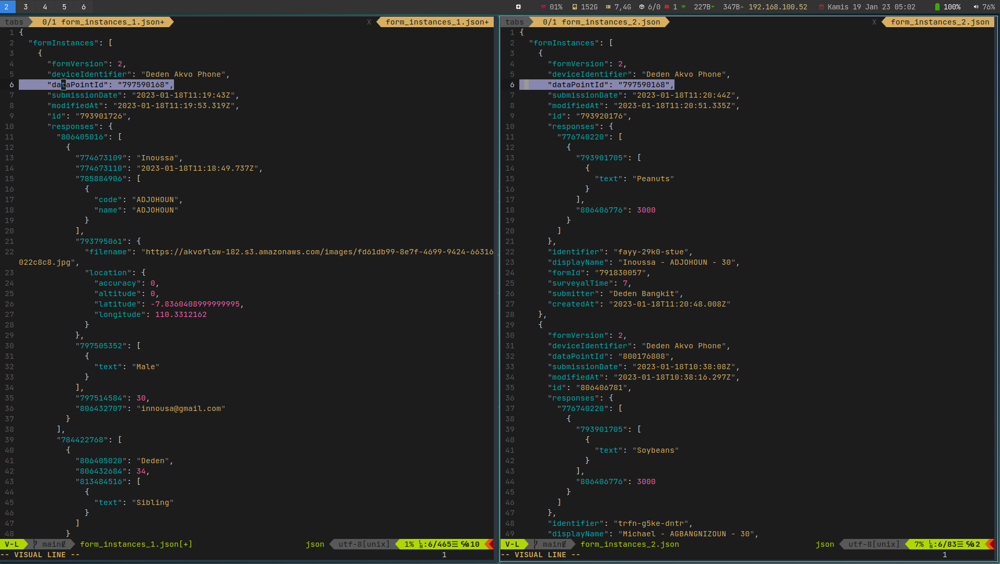

Both Registration and Monitoring has similar json structure

DATA RESPONSE is in the form instance API endpoint FORM DEFINITION is in the surveys API endpoint
Generating CSV FILE with FORM DEFINITION as Headers and DATA RESPONSE as row values
End the request once the formInstances length is empty
{
"formInstances": []
}
We want to merge the cascade questions in the registration into our data monitoring form. after that we want to do aggregation based on the region stated in the cascade question